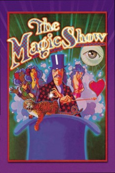

Country:United States, 105 minutes
Spoken languages:English
Genres:Fantasy, Music
Director(s):Norman Campbell
Writer(s):Bob Randall, Jerry Ross
Video Codec:Unknown
Number: 2254

Certification:PG
Storyline:
The Magic Show is a one-act musical with music and lyrics by Stephen Schwartz and a book by Bob Randall. It starred magician Doug Henning. Produced by Edgar Lansbury, it opened on May 28, 1974 at the Cort Theatre in Manhattan, and ran for 1,920 performances, closing on December 31, 1978. Henning was nominated for the Tony Award for Best Featured Actor in a Musical and director Grover Dale was nominated for the Tony Award for Best Direction of a Musical. In 2001, a filmed performance staged especially for the cameras in 1980, directed by Norman Campbell at the Queen Elizabeth Theatre in Toronto, was issued on DVD by Image Entertainment. This production, originally intended for cinema release, differed notably from the original Broadway production, with several of the most memorable songs, such as "West End Avenue" and "Solid Silver Platform Shoes", removed. Doug Henning reprised his original starring role, while Didi Conn co-starred as Cal.
Cast:
Doug Henning (as Doug), Didi Conn (as Cal), Anita Morris (as Charmin), Jon Finlayson (as Van Zyskin), Jack Creley (as Shumway)
Medium: Media file,
Location: D:\Magic\Magic\The Magic Show (1983) with Doug Henning & Jazz Hands.mp4
Loaned: No
Aspect ratio: Unknown